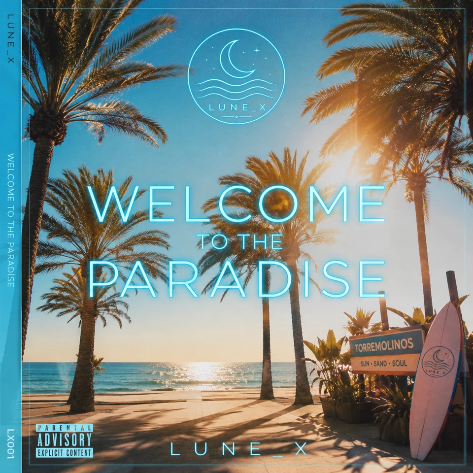

Il progetto e la visione
Lune_X è un'identità musicale virtuale con una direzione creativa umana
Una visione creativa dichiarata
Il progetto è ideato e diretto da Marcelo Javier Fernandez Caballero. I brani vengono realizzati con Suno Pro a pagamento e distribuiti tramite DistroKid. Le scelte artistiche, i temi, la selezione delle tracce e l'identità visiva fanno parte della direzione creativa umana
Lune_X non viene presentato come una persona o un cantante dal vivo. La tecnologia di produzione è resa trasparente e i diritti commerciali dipendono dalle condizioni contrattuali applicabili a ogni registrazione

Chi è Lune_X
Lune_X è un’identità artistica virtuale che esplora elettronica, dance e pop attraverso atmosfere notturne, intimità e paesaggi mediterranei. Ogni album è un capitolo di questo immaginario, guidato da scelte creative umane e realizzato con strumenti di produzione assistita da AI.
Uno spazio per altre voci
Ogni mese la homepage può condividere anche la musica di un artista umano. L'ospite attuale è Pier Paolo Piccioni con Presunte Realtà — Radio Edit, proposta editoriale indipendente